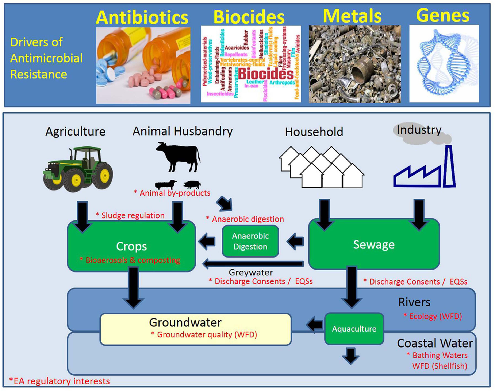

Module 1: Antimicrobial resistance
A brief history of antimicrobial resistance (AMR)
Until the 20th Century, influenza and pneumonia, tuberculosis, and enteric infections were among the top three causes of death. The average life expectancy of an adult in Western Europe was approximately 50 years, and 2% of children failed to live beyond age 5 because of premature deaths caused mostly by infectious diseases.
Industrialization and increasing wealth during the 19th century brought improvements in drinking water and sanitation in many countries, leading to reductions in communicable enteric infections and improvement in life expectancy Figure 1. By the early 20th century, vaccines for pertussis, diptheria, yellow fever and tuberculosis were introduced. However, common bacterial infections remained a serious medical threat. Streptococcal throat infections were sometimes fatal, ear infections could progress to deafness, mastoiditis or meningitis. Minor surgeries were associated with risk of life-threatening infections. Maternal mortality during childbirth approached 2%.
Antibacterial resistance pre-dates the medical use of antibiotics and is estimated to have emerged with bacteria on earth approximately 2-2.5 billion years ago. In contrast, the first humans are believed to have existed around 2 million years ago. The first recorded use of antimicrobial -like substances was by the early Egyptians, Greeks, and Chinese, who used natural products with antimicrobial activity for millennia to treat wounds and infections, even if the causes of these diseases were unknown until the 19th and 20th century. Therefore, antibiotic resistance was not created by humans and misuse of antibiotic inevitable-it is a biologic certainty and evolutionary destiny.
The microbiologist and immunologist Paul Ehrlich (1854-1915) (Figure 2) is credited with the discovery and first medical application of a synthetic antibiotic arsphenamine (Salvarsan) for the treatment of a bacterial infection-syphilis. He was awarded the Nobel Prize in Medicine in 1909.
Yet it was the serendipitous discovery of penicillin in 1928 by Alexander Fleming (Figure 3) and its subsequent purification of the drug in quantities needed for clinical testing by Drs. Florey and Chain in the 1930s, that initiated the true start of the modern antibiotic era. Alexander Fleming was awarded the Nobel Prize in Medicine in 1945.
Interestingly, the term antibiotic was actually coined by Selman Waksman, a biochemist and microbiologist who discovered the first effective treatment for tuberculosis, streptomycin, and was awarded the Nobel prize in 1952.
Alexander Fleming was among the first physicians to caution about the risks of resistance to penicillin if used too little or for a too short of period during treatment. In his Nobel Prize acceptance speech, Dr. Fleming noted:

“It is not difficult to make microbes resistant to penicillin in the laboratory by exposing them to concentrations not sufficient to kill them, and the same thing has occasionally happened in the body. The time may come when penicillin can be bought by anyone in the shops. Then there is the danger that the ignorant man may easily under-dose himself and by exposing his microbes to non-lethal quantities of the drug make them resistant.”
-Sir Alexander Fleming, Nobel Prize Lecture, December 11, 1945
By 1947, Fleming’s predictions had come true as the first cases of penicillin resistance were already being reported. Thus began the modern era’s “arms race” between new antibiotic discovery and increasing antimicrobial resistance.
Initially, antibiotic discovery seemed to keep pace with resistance as a host of new chemical classes were developed and introduced in the 1950s-1980’s. For the first half of the century, the repeated and successful response to emerging resistance was to discover new antibiotics [1].
Yet by the 1980’s, the discovery of new agents began to slow and this strategy began to fail Figure 4. The last truly “new” antibiotic class discovered that reached the market was in 1987. Since then, there has been a lack of innovation in the field, and today there are few novel antibiotic classes in the drug pipeline.
In Module 2 we will examine the scientific challenges and market forces that have made new antibiotic discovery increasingly difficult and how access to newer antibiotics is limited in many parts of the world.

Once antibiotic resistance develops, it can spread from one colonised patient to another patient if appropriate hygienic precautions (e.g., hand hygiene, isolation) are not followed. The risk of resistant bacteria spreading is enhanced in crowded environments, especially when people in the surrounding area are receiving antibiotics - a common scenario in hospitals in wards of critically-ill patients.
The consequences of faltering antibiotic discovery are now being felt worldwide as more and more bacterial infections are becoming harder to treat. Especially worrisome is the lack of antibiotics against common Gram-negative bacteria (i.e. Escherichia coli, Klebsiella pneumonia, Pseudomonas aeruginosa, Acinetobacter baumannii) that are increasingly resistant to all but last-line antibiotics. The rapid global spread of multi- and pan-resistant bacteria, also known in the lay press as “superbugs,” can cause infections that are not treatable with existing antibiotics.
Click this link to watch a YOUTUBE video of how quickly Escherichia coli and develop resistance to ciprofloxacin. Another excellent YOUTUBE video from the FRONTLINE Program: When Antibiotics Don’t Work
Global response to antimicrobial resistance
Recognizing the growing global threat of antibiotic resistance (AMR) on human health but also the economy and human development, The World Health Organization (WHO) and The Organisation for Animal Health (OIE) developed in 2001 a Global Plan for Containment of Antimicrobial Resistance that subsequently led to a Global Action Plan for AMR in 2017 and more recently a “Call to Action on Antimicrobial Resistance” in 2021. The plan outlines 21 strategies and 5 strategic objectives action plans that should be implemented in member states to address AMR. These include:
- Improvements in the awareness and understanding of antimicrobial resistance through effective communication, education and training
- Strengthening of knowledge and evidence base of AMR through surveillance and research
- Reductions in the incidence of infection through effective sanitation, hygiene and infection prevention measures
- Optimization the use of antimicrobial medicines in human and animal health
- Development of an economic case for sustainable investment in AMR research that takes account of the needs of all countries, and increase investment in new medicines, diagnostic tools, vaccines and other interventions
The WHO also proposed a Priority Pathogen List for research and development of new antibiotics and established a global antimicrobial use and surveillance program. This list includes bacterial pathogens that are considered to be be the biggest threat to human health in addition to Mycobacterium tuberculosis. The WHO list breaks down pathogens into three groups:
| Priority | Pathogens included |
|---|---|
| Critical | Acinetobacter baumannii (Carbapenem-resistant) Pseudomonas aeruginosa (Carbapenem-resistant) Enterbacterales (3rd generation cephalosporin, carbapenem-resistant) |
| High | Enterococcus faecium, vancomycin-resistant Staphylococcus aureus, methicillin-resistant, vancomycin intermediate and resistant Helicobacter pylori, clarithromycin-resistant Campylobacter, fluoroquinolone-resistant Salmonella spp., fluoroquinolone-resistant Neisseria gonorrhoeae, 3rd generation cephalosporin-resistant, fluoroquinolone-resistant |
| Medium | Streptococcus pneumoniae, penicillin-non-susceptible Haemophilus influenzae, ampicillin-resistant Shigella spp., fluoroquinolone-resistant |
These pathogens may exhibit multi-drug resistance (MDR), extensive drug resistance (XDR) or pan-drug resistance (PDR) [2]. Difficult-to-treat resistance (DTR) is a newer definition used to define isolate resistance patterns that require the use of less-effective or more toxic “reserve” antibiotics- e.g., Acinetobacter baumanii susceptible only to colistin and tobramycin [3].
The resistance definitions used by the WHO have specific meanings.
- MDR-resistance to one agent in at least 3 antibiotic categories
- XDR-resistant except to 2 or fewer antibiotic categories
- PDR-resistant to all agents in all antibiotic categories
- DTR-requires the use of less-effective or more toxic “reserve” antibiotics
Currently, both the WHO and OIE have also developed lists of antibiotics that are considered of “critical importance” for human and animal medicine. These lists help establish priorities for antimicrobial resistance surveillance and new drug development.
What are the drivers of antimicrobial resistance?
AMR is a natural phenomenon. Most antimicrobial drugs are naturally produced by micro-organisms, including environmental fungi and saprophytic bacteria, or are synthetic modifications of these natural products, with only a few drugs (e.g., sulphonamides and fluoroquinolones) being wholly synthetic. Yet AMR selection is accelerated by antimicrobial exposure in health care, agriculture, and the environment. Further transmission is affected by standards of infection control in healthcare settings, sanitation, access to clean water, access to assured quality antimicrobials and diagnostics, travel, and migration.
Antimicrobials are among the most commonly prescribed drugs used in human medicine, yet up to 50% of all antimicrobials prescribed to people are considered unnecessary. This use, misuse, or overuse of antimicrobial drugs is considered to be a major driving force towards antimicrobial resistance. Globally, the use of antimicrobials is accelerating worldwide, particularly in LMICs, as antimicrobials become readily accessible and affordable. The use of WHO Watch antibiotics increased 90.0% worldwide and 165% in LMICs between 2000 and 2015.
In medicine, the concentration of antibiotic prescribing might be highest in inpatient settings, with 30–40% of patients on antibiotics in European hospitals. However, the overall highest quantity of antimicrobial consumption is highest in the community setting.
Yet, more antimicrobials are used in food production than in human beings, with marked national differences in the number of antimicrobial drugs used in food producing animals as shown in Figure 5. It has been estimated that 73% of all antibiotic use per by weight is for food production in animals [4]. Various studies have shown that antimicrobial resistance has, at least in part, emerged as a result of the selective pressure exerted by antimicrobial use outside of human medicine, namely in veterinary medicine, food-animal and fish production, and agriculture. Therefore to effectively AMR, a multifaceted or ONE-HEALTH approach is required.

AMR in Low-Middle Income Countries (LMICs)
AMR is a global problem, but its prevalence across the globe varies with antibiotic consumption, access to clean water and adequate sanitation, vaccination coverage, and access to quality healthcare. The latest WHO report, based on AMR data from 66 countries, illustrates an alarming picture of the global status of AMR as an increasing number of countries are now reporting high rates of resistance among antimicrobials used to treat common infections.
There are considerable knowledge gaps regarding AMR prevalence in LMICs that lack clinical and laboratory capacity and surveillance infrastructure. A systematic review of 144 16 studies across Africa lacked AMR data for approximately 40% of the African countries. In the Asia and Pacific region, South East Asia is estimated to have the highest risk of AMR emergence and spread, with the highly transferable New Delhi metallo-beta-lactamase-1 (NDM-1) as an example. Furthermore, China and India alone accounted for more than one-third of the global incidence of 17 multidrug-resistant (MDR) tuberculosis [6].
COVID-19 has focused global attention on the inequitable access to the tools needed to control the pandemic, with high-income countries (HICs) and low- and middle-income countries (LMICs) at opposite ends of the scale. In the case of antibiotic resistance, a pandemic projected to cause four times more deaths per year than occurred from COVID-19 during 2020, inequity between HICs and LMICs is a major challenge [7]:
The World Bank defines lower middle income economies as countries where the per capita gross national income (GNI) falls between $1,026 and $3,955. The countries that are part of the upper MIC classification with a GNI that falls between $3,956 and $12,475.
Countries currently included: Afghanistan, Albania, Algeria, Angola, Antigua and Barbuda, Argentina, Armenia, Azerbaijan, Bangladesh, Belarus, Belize, Benin, Bhutan, Bolivia, Bosnia and Herzegovina, Botswana, Brazil, Burkina Faso, Burundi, Cabo Verde, Cambodia, Cameroon, Central African Republic, Chad, China (People’s Republic of), Colombia, Comoros, Democratic Republic of Congo, Congo, Costa Rica, Côte d’Ivoire, Cuba, Djibouti, Dominica, Dominican Republic, Ecuador, Egypt, El Salvador, Equatorial Guinea, Eritrea, Eswatini, Ethiopia, Fiji, Gabon, Gambia, Georgia, Ghana, Grenada, Guatemala, Guinea, Guinea-Bissau, Guyana, Haiti, Honduras, India, Indonesia, Iran, Iraq, Jamaica, Jordan, Kazakhstan, Kenya, Kiribati, Democratic People’s Republic of Korea, Kosovo, Kyrgyzstan, Lao People’s Democratic Republic, Lebanon, Lesotho, Liberia, Libya, North Macedonia, Madagascar, Malawi, Malaysia, Maldives, Mali, Marshall Islands, Mauritania, Mauritius, Mexico, Micronesia, Moldova, Mongolia, Montenegro, Montserrat, Morocco, Mozambique, Myanmar, Namibia, Nauru, Nepal, Nicaragua, Niger, Nigeria, Niue, Pakistan, Palau, Panama, Papua New Guinea, Paraguay, Peru, Philippines, Rwanda, Saint Helena, Samoa, São Tomé and Príncipe, Senegal, Serbia, Sierra Leone, Solomon Islands, Somalia, South Africa, South, Sudan, Sri Lanka, Saint Lucia, Saint Vincent and the Grenadines, Sudan, Suriname, Syrian Arab Republic, Tajikistan, Tanzania, Thailand, Timor-Leste, Togo, Tokelau, Tonga, Tunisia, Turkey, Turkmenistan, Tuvalu, Uganda, Ukraine, Uzbekistan, Vanuatu, Venezuela, Vietnam, Wallis and Futuna, West Bank and Gaza Strip, Yemen, Zambia, Zimbabwe
LMICs are particularly susceptible to the emergence and rapid spread of AMR for several reasons:
- High population density
- Lack of access to clean water, suboptimal sewage systems, poor sanitation
- Poor healthcare infection control practices
- Increasing consumption of antimicrobials in humans
- Availability and distribution of poor-quality (counterfeit) medicines
- Lack of regulation on antimicrobial use in farming, and pharmaceutical industry pollution
The health and economic impact of AMR is also more severe and longer lasting in LMICs versus HICs. AMR is generally associated with:
Increased mortality and health costs
Antibiotics effective against AMR are more expensive and not affordable for many patients
Increasing use of antibiotics with efficacy against AMR leads to higher resistance to “last-line” antibiotics Figure 6.
In fact, carbapenem consumption is increasing at a rapid pace in poor economies [8].
Lack of access to antibiotics in some poorer countries, a driver of mortality particularly in children under 5 years of age
Lack of access to newer, expensive antibiotics needed to treat the increasing toll of MDR and XDR bacterial infections
Inequity in ability to provide the basic public health interventions that drive many of the social determinants of infectious diseases in LMICs

The singular effectiveness of access to clean water, sanitation and hygiene, called WASH, in preventing the spread of disease is well understood, yet billions of people around the world still lack access to these necessities [9].
- Currently, 2.1 billion people live without access to safe drinking water and 4.5 billion people are without access to adequate sanitation.
- Every day, 1300 children under 5 die from preventable diarrhoeal diseases, including cholera, caused by contaminated water and poor sanitation.
- 1 in 3 healthcare facilities lacks soap and water or hand sanitizer where staff provide patient care. Billions of patients worldwide must rely on these facilities.
- In some countries, up to 90% of women receive routine prophylactic antibiotics during childbirth, highlighting the conditions under which they are delivering their babies and what would cause the inevitability of infection
The cumulative lack of WASH adds up to children and adults not only getting unnecessarily sick—with the associated suffering, medical costs and loss of income or schooling—they are relying on antibiotics to get better [10]. The challenge here is that WASH is a public works solution for a public health problem. WASH is not a pill or ‘quick fix’. It requires capital investment, system strengthening, and behaviour change to ensure that clean water and functional toilets are available and utilized day-in and day-out. These issues require a different set of skills than those possessed by medical and public health professionals.
In LMICs, an estimated 670 million people still practice open defaecation in 2017, and only one in three people have access to safe drinking water, resulting in high rates of diarrheal disease and equally large amounts of inappropriate antibiotic use [10]. According to WHO surveys, vaccination, a cornerstone of infection prevention and reducing the need for antibiotic use, is suboptimal in both HICs and LMICs. In 2019, global third-dose coverage for childhood pneumococcal vaccination in 149 member states was only 48%, and global rotavirus vaccine coverage was estimated at 39%. In South Africa, middle-income country, procures less than 1 million doses of influenza vaccine for its annual influenza season, despite in excess of 10 million people being identified as high-risk for influenza and prioritized for vaccination.
Optimizing infection prevention on farms and making improvements to housing conditions and feed to reduce illness in animals is also critical in food production to offset the need for antibiotic growth promotion or metaphylaxis in food production animals. While there has been progress in the reduction of antibiotic use in farms in the EU and other HICs, attention nor funding for such improvements in LMICs has not even been proposed. “It’s one thing being told to reduce your antibiotic use in food production, it’s another to have the means to do so, even for the most committed resource-poor farmer.
As discussed above, the emergence of antimicrobial resistance (AMR) is a complex phenomenon and is intensified by selective pressure through antibiotic use in humans, animals, and agriculture. The transmission of AMR to humans occurs from contact with animals (including food), other humans, and the environment. Transmission is facilitated by several factors, including high population density, lack of access to clean water, suboptimal sewage systems, poor sanitation, and poor healthcare infection control practices, all of which are more common in LMICs. With the increasing consumption of antimicrobials in humans, lack of regulation on antimicrobial use in farming, and pharmaceutical industry pollution, it may not be surprising that relatively higher levels of AMR among human pathogens are being reported from LMICs Figure 7.

In 2022, The Antibiotic Resistance Collaboration published an analysis of mortality rates associated with antibiotic resistance by country [11]. The authors estimated disability-adjusted life-years (DALYs) attributable to and associated with bacterial AMR for 23 pathogens and 88 pathogen–drug combinations in 204 countries and territories in 2019. Data were obtainted from systematic literature reviews, hospital systems, surveillance systems, and other sources, covering 471 million individual records or isolates and 7585 study-location-years. Predictive statistical modelling was used to produce estimates of AMR burden for all locations, including for locations with no data Figure 8.
These data demonstrate a widening gap in the impact of antimicrobial resistance between HIC vs. LMICs.
The international focus on awareness, surveillance, infection prevention, stewardship and research and development (R&D) of new antibiotics may actually be widening the equity gap by pouring millions of dollars into R&D of new antibiotics and surveillance systems, while the intervention that could benefit LMICs the most, infection prevention, has received a relatively few resources.
What are the possible solutions to address resistance inequality?
Recently the COVID-19 pandemic has refocused attention that in infectious diseases The Access to COVID-19 Tools (ACT)-Accelerator that we will discuss in Model 2 has shown that financial contributions from HICs to a LMIC-pool can improve equitable access to diagnostics, therapeutics and vaccines, but it is conceivable that the same model could be broadened to encompass tools that would support major social change for AMR.
How can the effectiveness of antimicrobials be preserved?
Strategies for the prevention and containment of AMR often focus on:
- Improvement of infection diagnosis and prescription practices (antimicrobial stewardship)
- Reduction of antimicrobial use in agriculture and environmental exposure in general
- Development of new antimicrobials
- Access to essential medicines of assured quality
- Improvement of AMR surveillance
Antimicrobial stewardship is a coordinated program that promotes and focuses on the appropriate use of antimicrobials and strategies to improve patient outcomes, reduces antimicrobial resistance, and decrease the spread of infections caused by multidrug-resistant organisms Figure 9. These programs may be implemented through the use of institution-specific treatment guidelines and an antibiotic stewardship team (typically infectious diseases physicians with a clinical pharmacist) who carry out full-time activities to promote and encourage appropriate antibiotic use.
While these programs have been shown to be successful Figure 10, many gaps remain in the knowledge of how to optimally design and sustain stewardship programs in the hospital, and such programs are rarely implemented in community settings where most antibiotic consumption takes place.
WHO AWARE Antibiotic Classification
Since 2017, the WHO has published the AWaRe Antibiotic Classification List to support antibiotic stewardship efforts at local, national and global levels. The classification takes into account the impact of different antibiotics and antibiotic classes on antimicrobial resistance, to emphasize the importance of their appropriate use.
Antibiotics are classified into three groups: Access, Watch and Reserve.
- The “Access” group includes antibiotics that have activity against a wide range of commonly encountered susceptible pathogens while also showing lower resistance potential than antibiotics in the other groups. Selected Access group antibiotics are recommended as essential first or second choice empiric treatment options for infectious syndromes reviewed by the Essential Medicines List (EML) Expert Committee and are listed as individual medicines on the Model Lists of Essential Medicines to improve access and promote appropriate use.
- The “Watch” group includes antibiotic classes that have higher resistance potential and includes most of the highest priority agents among the Critically Important Antimicrobials for Human Medicine and/or antibiotics that are at relatively high risk of selection of bacterial resistance. These medicines should be prioritized as key targets of stewardship programs and monitoring. Selected Watch group antibiotics are recommended as essential first or second choice empiric treatment options for a limited number of specific infectious syndromes and are listed as individual medicines on the WHO Model Lists of Essential Medicines.
- The “Reserve” group** includes includes antibiotics and antibiotic classes that should be reserved for treatment of confirmed or suspected infections due to multi-drug-resistant organisms. Reserve group antibiotics should be treated as “last resort” options.
- Selected Reserve group antibiotics are listed as individual medicines on the WHO Model Lists of Essential Medicines when they have a favourable risk-benefit profile and proven activity against “Critical Priority” or “High Priority” pathogens identified by the WHO Priority Pathogens List1, notably carbapenem resistant Enterobacteriaceae. These antibiotics should be accessible, but their use should be tailored to highly specific patients and settings, when all alternatives have failed or are not suitable. These medicines could be protected and prioritized as key targets of national and international stewardship programs involving monitoring and utilization reporting, to preserve their effectiveness.
- Finally, the list includes “not-recommended” antibiotics- fixed-dose combinations of multiple broad-spectrum antibiotics listed here is not evidence-based, nor recommended in high-quality international guidelines. WHO does not recommend their use in clinical practice.
The AWaRe tool is useful for monitoring antibiotic consumption, defining targets and monitoring the effects of stewardship policies that aim to optimize antibiotic use and curb antimicrobial resistance. The WHO 13th General Programme of Work 2019–2023 includes a country-level target of at least 60% of total antibiotic consumption being Access group antibiotics
Diagnostic stewardship
Inappropriate diagnostic testing can drive unnecessary antibiotic use and is considered an essential component in stewardship programs. In 2012, The American Board of Internal Medicine initiated the “Choosing Wisely” campaign design to educate both practitioners and patients about the importance of avoiding unnecessary diagnostic tests. A link the website can be found here.
Urine dipsticks (tests strips for leukocyte esterase and nitrates) are frequently used to “diagnose” urinary tract infections, but are one of the most common drivers for inappropriate antibiotic prescriptions. Advani recently reviewed the use (and misuse) of this test [12].
The problems of urine dipstick testing were also discussed on the ID:IOTS podcast episode “Urinalysis paralysis.” The podcast is an entertaining and informative discussion by two UK-based infectious diseases physicians. A link to the episode can be found here
Case study: A antibiotic stewardship program on a national level in a LMIC
The Antibiotics Smart Use (ASU) program in Thailand was an implementation research project comprised of three phases:
- Implementation of behavior change interventions
- Examination of the feasibility of scale up; and
- Identification of mechanisms for sustainability
The guiding principle of the ASU program is that antibiotics should not be used to treat non-bacterial infections. ASU started by trying to reduce unnecessary antibiotic use in patients with 3 conditions: upper respiratory tract infections, especially common colds with sore throat; acute diarrhea and simple wounds.
The program focused on simple measures, compatibility with the providers’ values, advantages with respect to current practice; performing testable interventions, and transparency.
In the beginning, ASU consisted of a network of researchers from Thailand’s Ministry of Public Health and pharmacists and doctors from Srinakharinwirot University and Chulalongkorn University.
In phase 1 (2007- 2008) they piloted educational and training reforms to improve prescribing in 10 hospitals and 87 primary health centres in one province. Antibiotic prescription, provider attitudes of effectiveness and knowledge of antibiotics, non-prescription rates in case of non-bacterial infections, and patient health and satisfaction were monitored.
In phase 2 (2008-2009) the same indicators were then used to scale up the program to three provinces and two hospital networks, counting to 44 hospitals and 621 primary health care centres.
The 3rd phase (2010 – Present) is focusing on long-term sustainability and scale up of ASU – initially to 22 hospital networks in 15 provinces, and then subsequently across the entire country.
| Characteristics | Phase 1 (1 year) |
Phase 2 (1 year, 3 months) |
Phase 3, transition period |
|---|---|---|---|
| Goals | Test effectiveness of ASU in changing antibiotic prescription behavior | Test feasibility of scaling up ASU model | Strengthen networks, assess scaling up mechanisms |
| Target | 1 province | 3 provinces and 2 networks of public and private hospitals | 22 hospital networks in 15 provinces |
| Funding agencies |
WHO, Thai FDA | HSRI, NHSO, Thai FDA | DSMDC, Thai FDA |
| Coordinating agencies |
Thai FDA | Thai FDA | DSMDC, Thai FDA, IHPP |
| Budget spending | US$ 33,000 | US$ 73,000 | US$ 123,000 |
| Spillover effect | No | Yes | Yes |
The program also had many simple but innovative community health interventions. For example, holding up a simple concave mirror to consumers trying to buy antibiotics for treating the common cold and cough was part of a new initiative in Thailand by community pharmacists to lower consumption of antibiotics Figure 11.

After completion of Phases 1-2, the following results were noted:
- Positive effects on reducing antibiotic prescribing. Antibiotic use was reduced by 18-46%
- The percentage of patients who did not receive antibiotics increased by 29.1%, whereas there was no change in the control groups who were not involved in the ASU program
- Patient health and satisfaction rates were high, 96%-99.3% of patients surveyed who did not refeive antibiotics recovered and felt better within 7-10 days after their medical visits
- Success in scaling up. The number of hospitals adopting ASU increased from 44 hospitals (2008) to more than 600 hospitals (2010).
The ASU project is having an impact beyond the borders of Thailand too and is now seen as a model for replication in other parts of south-east Asia with interest elicited from as far away as Africa and Latin America. Read more about the ASU project at react.org
Antimicrobial resistance in Italy
Southern Europe, including Italy, has among the highest rates of resistance for pathogens included on the WHO Priority Pathogen list. For example, surveillance data from the European Centres for Disease Control (ECDC) have reported a dramatic increase in multidrug-resistance (MDR) in Italy since 2009, with now more than one-third of Klebsiella pneumoniae resistant to previously-considered last-line antibiotics such as carbapenems Figure 12. An interactive ECDC resistance atlas showing differences in resistance rates between countries for common antibiotics can be found here. Similarly, the Italian Antimicrobial Surveillance system (Micronet Resistance Surveillance) has reported: that for 2021:
- 23.8% of Escherichia coli are resistant to 3rd generation cephalosporins
- 29.5% of Klebsiella pneumoniae are resistant to carbapenems (including 33.1% resistant to multiple drug classes)
- 16.4% of Pseudomonas aeruginosa are resistant to carbapenems
- 86.9% of Acinetobacter spp. are resistant to carbapenems with 78.8% of species resistant to multiple drug classes
- For the Gram-positive organism Staphylococcus aureus, the percentage of methicillin-resistant isolates (MRSA) remained stable, around 29.9%%, while a worrying trend continues to increase in the percentage of Enterococcus faecium isolates resistant to vancomycin, which in 2020 was equal at 28.2%
- For Streptococcus pneumoniae there was a slight increase in both the percentage of isolates resistant to penicillin (9.7%).
- Overall, higher antimicrobial resistance rates (around 40%) are observed in ICUs versus general medical wards for both carbapenem-resistant K. pneumoniae and methicillin-resistant S. aureus.

The global future of AMR
- Drug-resistant infections already cause at least 700,000 deaths globally a year, including 230,000 deaths from multidrug-resistant tuberculosis.
- The estimated total number of deaths due to AMR could climb to 10 million deaths globally per year by 2050 under current projections Figure 13.
- Increasing resistance could lead to an unthinkable future of untreatable infections, reversing more than a 100 years of medical progress.
Routine medical procedures or surgery will become more dangerous and associated with higher complication rates.
Immunosuppression, cancer chemotherapy and transplantation may carry unacceptable risk for many patients if infections cannot be effectively prevented and treated.
- Economic and social progress in many countries will be dramatically impacted by increasing AMR leading to political and social instability. The initial short-term economic damage of uncontrolled antimicrobial resistance will be comparable to the economic shocks experienced during the 2008-2009 global financial crisis and result in dramatically-increased healthcare expenditures; reductions in food and feed production, reduced economic output, and increased poverty and inequality. The economic impact of antimicrobial resistance is predicted to be even greater and longer lasting on low-and middle-income (LMIC) countries.

One-Health Perspective of AMR
Because the drivers of antimicrobial resistance lie in humans, animals, plants, food and the environment, a sustained One Health response is essential to engage and unite all health and environmental sectors around a shared vision and goals. “One Health” refers to designing and implementing programmes, policies, legislation and research in a way that enables multiple groups engaged in human, terrestrial and aquatic animal and plant health, food and feed production Figure 15 and the environment to communicate and work together to achieve better public health outcomes.

Antibiotic use in animal food production
Few antimicrobial classes are reserved exclusively for humans Figure 15. The vast majority of antibiotics are used both in humans and animals, including domestic mammals, birds, farmed fish and shellfish, honeybees and others.
As noted earlier, 73% of all antibiotic consumption per weight is used for food production in animals. Critically, two-third of all human infectious diseases that have emerged or re-emerged in recent decades are zoonotic-i.e. they originated in animals. Therefore the transmission of antibiotic resistance organisms from the foodchain to humans is a major health concern.
In horticulture, tetracyclines, streptomycin, and other antimicrobials are used for the prophylaxis and treatment of bacterial infections that affect plants (e.g., fire blight Erwinea amylovora).
In veterinary medicine, there are major differences in the way antibiotics are used for companion animals (e.g., dogs, cats, pet birds, horses) versus food-producing animals. Antibiotic use in companion animals is broadly similar to humans for the treatment of infections or in select cases prophylaxis, such as post-surgery. In the case of food animals, if some animals are infected antibiotics may be administered through feed or water to the entire group for reasons of practicality or efficiency. Metaphylaxis is a term used to describe therapeutic/prophylaxis antibiotic treatment at a group level.
The most controversial type of group treatment in food animals is long-term, low-dose mass antibiotic treatment for purposes of growth promotion Figure 16. This practice has a high propensity to select for antimicrobial resistance and is driven by economic factors rather than treatment of clinical infection. The practice was banned by the EU in 2006 but still continues in some countries such as the United States and China.

The reported benefits of using antibiotics for growth promotion is controversial and reports of the beneficial effects in terms of weight gains vary widely widely in the literature (1-10%). Concerns have been expressed that antimicrobial growth promoters are often used to compensate for poor hygiene/housing and healthy management [13].
Unfortunately, use of antibiotic for growth promotion has increased dramatically with the growing demand in meat-based diets. Since 2000, meat production has plateaued in high-income countries but has grown by 68%, 64%, and 40% in Africa, Asia, and South America, respectively [4]. The transition to high-protein diets in low- and middle-income countries (LMICs) has been facilitated by the global expansion of intensive animal production systems, in which antimicrobials are used routinely to maintain health and productivity.
There are 4 factors that typically determine the health of animals, (e.g., chickens):
- The genetic stock of the animals
- Adequate nutrition
- Hygiene of living conditions
- Adequate veterinary care
While antibiotics may be able to improve deficiencies in 1 of the 4 areas, if multiple aspects are missing then antimicrobial resistance is unlikely to improve animal health or growth. Thus, antimicrobials are often surrogates for good hygiene on farms. Ideally, a key goal to reduce antibiotic use in animals is to further strengthen the 4 non-antibiotic aspects that are important to animal health so antibiotic use can be avoided.
Historically, governmental regulations have focused on toxicological dose-response data and the presence of antimicrobial residues in animal tissue, milk or other edible products (i.e. eggs) from treated animals - so called minimum residue levels (MRLs) compatible with acceptable risk in humans. While MRLs are well-understood and enforced with testing programs and penalties, these programs do not take into account selection of antimicrobial-resistant pathogens.
The WHO has advocated for the termination of using antimicrobials for growth promotion. A recent report from the ECDC has suggested some progress in addressing this problem. Using surveillance data from 2017, the EU/EEA population mean antibiotic consumption in the 29 countries was 130 mg per kg of estimated biomass in humans and 108.3 mg per kg in food-producing animals Figure 17. This first time since the agencies began publishing the joint reports in 2011 that antibiotic use in humans has exceeded use in livestock. Consumption of third- and fourth-generation cephalosporins, fluoroquinolones, and aminopenicillins was considerably higher in human medicine, while consumption of macrolides was similar, and consumption of tetracyclines and polymyxins—a last-resort class of antibiotics that includes colistin—was significantly higher in food-producing animals.
In 2022, new EU legislation will prohibit all forms of routine antibiotic use in farming, including preventative group treatments and medicated feeding except in extraordinary circumstances.
The impact of animal antibiotic use on human AMR
Case study-cephalosporins
Third generation cephalosporins (ceftotaxime, ceftriaxone) are widely used for serious infections in humans, including the treatment of urinary tract, abdominal, lung and bloodstream infections. These antibiotics are classified as “critically-important” for human health (WHO AGISAR). Ceftiofur, cefpodoxime, and cefoperazone are similar cephalosporins approved veterinary antibiotics and used predominantly for treating bacterial infections in food-producing animals including chickens and cattle Figure 18.
Resistance to 3rd generation cephalosporins is mediated by extended-spectrum beta-lactamases (ESBLs) and AmpC enzymes. ESBL genes are highly mobile and transmitted on plasmids, transposons and other genetic elements that can spread horizontally (to surrounding bacteria and different bacterial species) and vertically (to daughter cells through replication). Consequently, resistance can spread rapidly from patient-to-patient and among different bacterial species. In recent years, growing resistance to 3rd generation cephalosporins is common among Escherichia coli and Klebsiella pneumonia has required greater reliance on the few remaining classes of antimicrobials such as carbapenems.
A number of studies comparing isolates from animals, food and human infections have found a high genetic similarity or clonal isolates that carry the same ESBL genes and plasmids colonizing animals used for food production and isolates causing clinical infections in patients [14].
Ceftiofur is frequently injected in small quantities to hatching eggs or chicks as metaphylaxis for Escherichia coli infections and/or yolk sac infections [13]. This practice has been shown to select for cephalosporin resistance in Salmonella enterica serovar Heidelberg- an important cause of human illness in many countries that is typically associated with consumption of contaminated poultry products [15].

Studies conducted by the Canadian Integrated Program for Antimicrobial Resistance Surveillance detected a high degree of temporal correlation in trends of resistance to ceftiofur and ceftriaxone (a drug of choice for the treatment of severe cases of salmonelloses in children and pregnant women) among Salmonella Heidelberg from clinical infections in humans, from poultry samples collected at retail stores, and in E. coli from poultry samples collected at retail stores [Figure 19][16]. Voluntary termination of ceftiofur metaphylaxis in hatcheries in the province of Quebec was followed by a precipitous drop in the prevalence of resistance to ceftiofur; subsequent reintroduction of ceftiofur in a more limited way was followed by a return to higher levels of resistance (Fig 1.9)
In Japan, voluntary withdrawal of the off-label use of ceftiofur in hatcheries in 2012 was also associated with significant decrease in broad-spectrum cephalosporin resistance in E. coli from chickens prepared for cooking. Some other countries (e.g., Denmark) have placed voluntary restrictions on its use. The label claim for day-old injection of poultry flocks was withdrawn in Europe, while some countries have banned off-label use of third-generation cephalosporins, and in other countries there is a requirement that use be restricted to situations where no other effective approved drugs are available for treatment.
These examples illustrate the danger of using antibiotics from the same class as critical therapies used to treat human infections for metaphylaxis or treatment in large numbers of animals. A similar pattern in poultry was also observed with mass medication of poultry flocks using fluoroquinolones antibiotics and selection of fluoroquinolone- resistant Campylobacter jejuni infections in humans [17].
Case study- colistin
Colistin is a member of the polymixin class of antibiotics, which have been used in both human and veterinary medicine for over 50 years. Until relatively recently, polymixins were rarely prescribed beyond topical or inhalational therapy in rare cases because of dose-limiting neurotoxicity and nephrotoxicity of the drugs.
However, use of intravenous colistin has surged in the last decade with the increase in carbapenem-resistant Pseudomonas aeruginosa, Acinetobacter baumannii and Klebsiella pneumoniae. Even as human use has increased, colistin continues to be used in Brazil, Europe and China a a growth promoting and antibiotic treatment for pigs, poultry and calves.
In 2014, colistin use in EU member states in animals was higher than humans with a reported 485 tonnes- 99.7% in oral form or oral medicated feed. In China, with the world’s largest production of pigs and poultry, an estimated 12,000 tonnes of colistin was used in the food production industry[18].
In 2015, Lui and colleagues reported plasmid-mediated colistin-resistance gene, mcr-1, in Escherichia coli isolates obtained from animals, food and human bloodstream infections in China [18]. Alarmingly, the resistance gene has also been detected in 5% of healthy travellers from China in other parts of the world [19].
The mcr-1 gene has also been detected in isolates obtained from wildlife and surface water samples, demonstrating environmental contamination [20].
Additional plasmid-mediated colistin-resistance genes have been reported in many other bacterial species and countries, including mcr-2 from pigs in Belgium, and mcr-3,4,5 in other countries [21].
Colistin illustrates important One-Health Dimensions of AMR that differ from third generation cephalosporins. Specifically, large volumes of colistin use in animals, rather than humans, have probably have driven colistin resistance now observed in humans [22]. Using large quantities of colistin for group treatment or growth promotion in animals has probably lead to antimicrobial resistance problems in human health, even through colistin was considered in the past to be less important because other less toxic treatments were still available.
In 2017, China banned the use of colistin as a food additive for animals. Colistin is currently not approved as a food additive in Europe or the United States, but is still be used in LMICs as a growth promoting agent.
Antimicrobial resistance in animals in LMICs
Many farmers in LMICs are sustenance farmers, and their livelihood is at stake if an animal becomes ills. Therefore, they may not have the resources for optimally nutritious feed and housing space/conditions. These challenges, combined with looser regulations on veterinary drugs, may facilitate the use of antimicrobials in feeding [4].
The largest hotspots of AMR in animals were in Asia and India Figure 20. Asia is home to 56% of the world’s pigs and 54% of the chickens. Other growing hotspots of AMR are found in central India and Kenya, where resistance to multiple drugs has appeared but not yet reached 50%.
These data suggest that in areas such as Asia, targeted interventions such as legislative action and subsidies to improve farm hygiene could reduce the need for antimicrobials in animal production, thereby preserving important drugs for human medicine and the treatment of sick animals. In these regions, meat consumption is still low and animal production is gradually intensifying. Here, there may be a window of opportunity to contain AMR by imposing strict hygiene standards in newly built farms. This approach could reduce the risk of the spread of resistant pathogens such as mcr1–carrying E. coli that have emerged in regions where intensive meat production has been facilitated by enormous quantities of veterinary antimicrobials.
In Africa, resistance maps reveal the absence of major AMR hotspots, except for the Johannesburg metropolitan area. This suggests, on the basis of the regions surveyed, that Africa probably bears proportionately less of the current global burden of AMR than high- and upper- to middle income countries. Policy-makers coordinating an international response to AMR might therefore spare Africa from the most aggressive measures, which may undermine livestock-based economic development and rightfully be perceived as unfair.
Clearly the the transition to sustainable animal production in both HIC and LMICs with improvements in farm-level biosafety and biosecurity are essential to reduce the future risk of AMR.
In the 1990s avoparcin, a glycopeptide antimicrobial, was widely used in growth promotion in pigs and poultry production that was not initially thought to be of public health importance. Surveillance and research were eventually able to show that avoparcin use in animals contributed to the selection and wide dissemination of what type of resistance?
Environmental concerns
One health considers possible environmental drivers of AMR in additional to human and animal health [McEwen2018-em?]. Many resistance mechanisms such as beta-lactamases are millions of years old and pre-date antibiotics. Soil and other environmental sources are rich sources of highly-diverse populations of bacteria and genes.
Antimicrobial resistance to a wide variety of drugs has been demonstrated in environmental bacteria isolated from the pre-antibiotic era, as well as from various sites (e.g., caves) free of other sources of exposure to modern antimicrobials. Yet their is abundant evidence that human has an impact on the resistome- the totality of or resistance genes in the total environment [23].
Hundreds of thousands of tonnes of antimicrobials are produced annually and find their way into the environment. Waste from treatment plants and the pharmaceutical industry especially if inadequately treated, has been show to release high concentrations of antimicrobials into surface water. Residues and metabolites of antimicrobials are constituents of human sewage, livestock manure, and aquaculture, along with fecal bacteria and resistance genes. Sewage treatment and composting of manure reduce concentrations of some but not all antimicrobials and micro-organisms, which are introduced to soil upon land application of human and animal bio-solids [24].
In developed countries with good-quality sewage and drinking water treatment, and where most people have little to no direct contact with food-producing animals, transmission of bacteria and resistance genes from agricultural sources is largely foodborne, either from direct contamination of meat and poultry during slaughter and processing, or indirectly from fruit and vegetables contaminated by manure or irrigation water[abxenvironment?]. In countries with poor sewage and water treatment, drinking water is likely to be very important in the transmission of resistant bacteria and/or genes from animals. Poor sanitation also facilitates indirect person-person water-borne transmission of enteric bacteria among residents as well as international travellers who return home colonized with resistant bacteria acquired locally. Through these and other means, including globalized trade in animals and food and long-distance migratory patterns of wildlife, antimicrobial-resistant bacteria are globally disseminated.
General measures to address antimicrobial resistance in the wider environment include improved controls on pollution from industrial, residential, and agricultural sources. Improved research as well as environmental monitoring and risk assessment are also required to better understand the role of the environment in the selection and spread of antimicrobial resistance and to identify more specific measures to address resistance in this sector.

Cross-border spread of AMR

World airline travel routes in 2014.** Photo credit Jpatokal/Wikimedia (CC BY-SA 2.5)
The COVID-19 pandemic has exposed the limitations of global collaboration and response within existing global health frameworks, pointing to a clear need for more rules-based global governance to be able to effectively prevent, prepare and respond to health emergencies in a more just equitable way. However, valuable lessons from COVID-19 pandemic could enhance actions against AMR Table 2. Clearly, actions taken by one country have had substantial consequences for others. governments should significantly bolster global and national capacity to prevent and respond to global cross-border health threats more broadly.
| Domain | Successes | Shortcomings |
|---|---|---|
| Research collaboration and information sharing |
|
|
| Vaccine discovery and development |
|
|
| Travel policies |
|
|
The actions of the EU during the pandemic illustrate the tension between short-term nationalistic incentives and long-term imperatives for cooperation towards achieving global public goods such as reducing antimicrobial resistance. The EU has struggled to balance preferences of individual member-states (and those of their political leaderships), with the collective interests of all member-states. Such tensions are especially challenging when health care and health policy issues are involved, given how these have hitherto remained largely the responsibility of the member-states. In a pandemic, this can lead to inertia and political indecisiveness at the EU level, with member-states filling the gap with potentially contradictory or competing decisions.
Looking ahead, it is likely that there will be several changes to the global health architecture, possibly including a new pandemic treaty and additional international collaborative mechanisms to promote preparedness and coordinate responses. In the following sections, we explore what those developments might look like in three key areas.
Summary
The post-COVID-19 world must overcome setbacks from the pandemic to hard-fought progress in reducing poverty and inequality. Health infrastructure and human resources vital for fighting AMR have been overburdened and will take many years to recover, particularly if governments impose austerity measures as they seek to recover from fiscal expansion during the pandemic.
Decades of funding neglect, combined with continuously increasing global antibiotic consumption, poor surveillance data, and weak pipelines for new drugs, vaccines and diagnostics, has left the world vulnerable to a pandemic of resistant and untreatable infections.
Therefore, strong multilateral collaboration is essential for the world to absorb these shocks and refocus on the silent but growing pandemic of AMR.
Pandemics are opportunities to re-imagine governance structures and learn from previous experiences. COVID-19 has shown the importance of multilateral collaboration in diverse areas, including research and knowledge sharing, discovery, development and distribution of vaccines and medicines and access to diagnostics and medicines. Action is needed now to reverse the unthinkable future of untreatable infections.